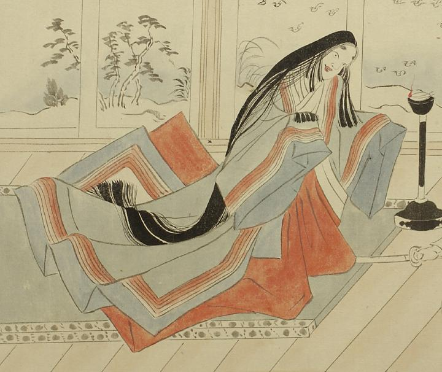

女の化物。全身が大きく、女房装束をまとっている。青色の唐衣に赤色の袴を着け、膝立ちになり、両目を大きく見開いている。
出典：親書誌：U426_nichibunken_0056：土蜘蛛草紙；ツチグモソウシ／日付：2007／資源識別子：U426_nichibunken_0056_0004_0001
Copyright (c)2010- International Research Center for Japanese Studies, Kyoto, Japan. All rights reserved.